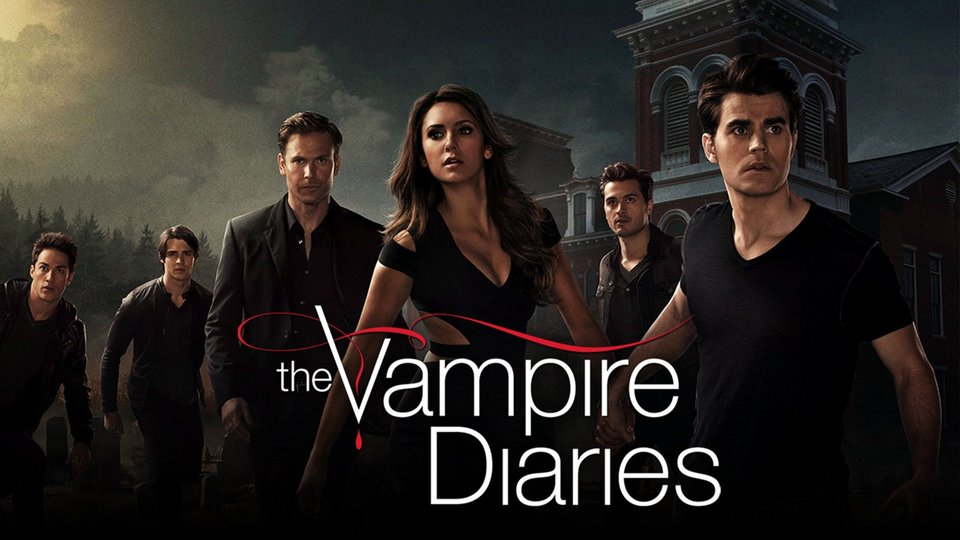

The series is set in the fictional town of Mystic Falls, Virginia, a town charged with supernatural history. It follows the life of Elena Gilbert, a teenage girl who has just lost both parents in a car accident, as she falls in love with a 162-year-old vampire named Stefan Salvatore.
This supernatural drama, based on the series of novels by L.J. Smith, details the lives of two brothers, Damon and Stefan Salvatore, who have been living as vampires for centuries. After years of moving from from place-to-place to hide their eternal youth (and bloodthirsty condition), the brothers return to the small Virginia town, Mystic Falls, where their lives as humans ended. Damon is snarky, handsome and charming, with a propensity for evil, while Stefan tries to remain noble -- in part to atone for bad behavior in his past.